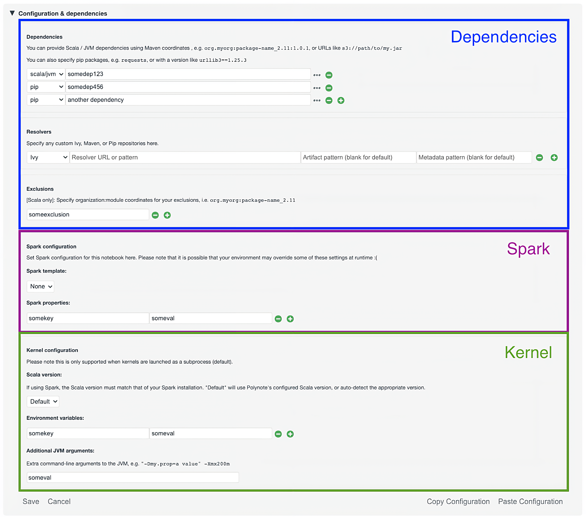
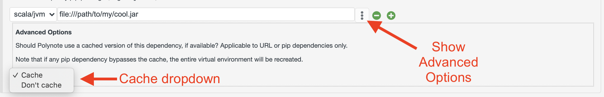

Configuration
The Notebook Configuration section allows you to set metadata for this notebook's execution environment.
The environment can be broken up into three general categories, as shown in the following diagram:

- Dependencies: the JVM and Python dependencies needed by your code
- Spark Properties: Spark-specific configuration
- Kernel Configuration: other runtime configuration for the Kernel
Dependencies¶
This section provides options for configuring dependencies that should be available when the notebook is executed.
JVM dependencies¶
JVM dependencies can be specified in the familiar
Group, Artifact, Version (or GAV) notation, such
as org.http4s:http4s-core:1.0.0-M16.
Polynote will resolve and download this dependency, as well as its transitive dependencies, using Coursier. Use the Exclusions section to exclude any pesky transitive dependencies that are causing you problems.
Use the Resolvers section to set up any custom resolvers (e.g., your company's internal resolver). Polynote supports both Maven and Ivy resolvers (the type of resolver can be selected in the dropdown).
Additionally, Polynote supports specifying a URL directly to a jar file - such as file:///home/jars/myCoolLibrary.jar.
Supported schemas include http and s3 (if Spark is enabled).
Warning
Note that if you specify a jar directly, Polynote will not resolve any transitive dependencies for this jar. In general, we recommend using GAV coordinates if you can.
Python dependencies¶
Similarly, Polynote allows you to specify Python dependencies using anything supported by pip
This means that you can specify pip dependencies by simply naming them, (e.g., requests), using a version
(requests==2.25.1), and even a requirement specifier (requests>=2.25). You can also pass in a file URL, as long as
it's supported by pip.
You can also specify additional pip resolvers (e.g., your company's internal resolver) in the Resolvers section (select
pip in the dropdown). Polynote just passes the resolver into pip (using
--extra-index-url), so be sure your
repository URL works with that.
Polynote creates a virtual environment for your notebook when you specify any pip dependencies. See the python documentation for more details.
Dependency Lists¶
You can place your dependencies in a newline-separated .txt file and include that file's URL in your dependencies.
The .txt file will be downloaded and each dependency added individually.
Note that this method will automatically cache all of the dependencies from the .txt file.
Dependency Caching¶
By default, Polynote caches JVM dependencies that are specified with URLs, as well as the virtual environment created for your notebook.
You can choose to manually bust the cache by either appending ?nocache to the end of the dependency, or by
unfolding the Advanced Options pane for your dependency by clicking on the ... button next to it.

Changing the cache option affects different types of dependencies differently.
- JVM Dependencies
- URL-based dependencies are affected by this setting. If using the cache, Polynote uses the cached file (if present) instead of downloading it again. Conversely, if the cache is disabled for this dependency then Polynote will download the jar anew each time.
- GAV notation dependencies are unaffected by this change (Coursier caches these dependencies itself and we don't expose any way to change that for now)
- Python Dependencies
- Python dependencies are affected by this setting. Since they share a virtual environment for this notebook, bypassing the cache for any Python dependency will bust the cache for all Python dependencies, since this is implmemented as a simple deletion and recreation of the virtual environment.
Feedback requested
If these restrictions are inconvenient for you, please let us know and we can look into improving this feature.
Scala and Spark¶
There are two complementary ways to specify Spark properties.
Spark Templatesare sets of related configuration that can be defined in the Server ConfigurationSpark Propertiesare key-value pairs that Polynote will insert into the Spark configuration.
For more details on using Spark with Polynote, check out the Spark documentation
The Scala version can be also be set in this section (independently of the version running on the server). Currently, 2.11, 2.12, and 2.13 are supported (since those are the versions supported by Spark).
Warning
If a Spark template that defines the version_configs key is selected, the Scala version dropdown will only display the Scala versions listed under that key. This behavior enables you to ensure that the Scala version you select matches that of your Spark installation.
Kernel¶
The Kernel configuration contains some miscellaneous configuration that affect the runtime environment of the Kernel.
In the first section, you can add Environment Variables that will be made available to the Kernel process.
In the second section you can add any additional JVM Arguments that Polynote will set when it launches the Kernel process.
Copying Configurations¶
The copy and paste buttons below the last section offer easy access to copy all three sections between notebooks.
When you click the Copy Configurations button, your selections will be copied to your clipboard - note that any new changes
you made to your current notebook's configuration will be copied over, but will not be saved to your current notebook.
When you click the Paste Configurations button, your selections will automatically update and save if the
contents of your clipboard represent a valid notebook configuration.